library(stochtree)BART with the Complementary Log-Log Link for Ordinal Outcomes
This vignette demonstrates how to use BART to model ordinal outcomes with a complementary log-log (cloglog) link function (Alam and Linero (2025)).
Introduction to Ordinal BART with CLogLog Link
Ordinal data refers to outcomes that have a natural ordering but undefined distances between categories. Examples include survey responses (strongly disagree, disagree, neutral, agree, strongly agree), severity ratings (mild, moderate, severe), or educational levels (elementary, high school, college, graduate).
The complementary log-log (cloglog) model uses the cumulative link function \[ \text{cloglog}(p) = \log(-\log(1-p)) \] to express cumulative category probabilities as a function of covariates \[ \text{cloglog}(P(Y \leq k \mid X = x)) = \log(-\log(1-P(Y \leq k \mid X = x))) = \gamma_k + \lambda(x) \]
This link function is asymmetric and particularly appropriate when the probability of being in higher categories changes rapidly at certain thresholds, making it different from the symmetric probit or logit links commonly used in ordinal regression.
In stochtree, we let \(\lambda(x)\) be represented by a stochastic tree ensemble.
Setup
import numpy as np
import matplotlib.pyplot as plt
from stochtree import BARTModel, OutcomeModelData Simulation
We simulate a dataset with an ordinal outcome with three categories, \(y_i \in \left\{1,2,3\right\}\) whose probabilities depend on covariates, \(X\).
# Set seed
random_seed <- 2026
set.seed(random_seed)
# Sample size and number of predictors
n <- 2000
p <- 5
# Design matrix and true lambda function
X <- matrix(rnorm(n * p), n, p)
beta <- rep(1 / sqrt(p), p)
true_lambda_function <- X %*% beta
# Set cutpoints for ordinal categories (3 categories: 1, 2, 3)
n_categories <- 3
gamma_true <- c(-2, 1)
ordinal_cutpoints <- log(cumsum(exp(gamma_true)))
# True ordinal class probabilities
true_probs <- matrix(0, nrow = n, ncol = n_categories)
for (j in 1:n_categories) {
if (j == 1) {
true_probs[, j] <- 1 - exp(-exp(gamma_true[j] + true_lambda_function))
} else if (j == n_categories) {
true_probs[, j] <- 1 - rowSums(true_probs[, 1:(j - 1), drop = FALSE])
} else {
true_probs[, j] <- exp(-exp(gamma_true[j - 1] + true_lambda_function)) *
(1 - exp(-exp(gamma_true[j] + true_lambda_function)))
}
}
# Generate ordinal outcomes
y <- sapply(1:nrow(X), function(i) {
sample(1:n_categories, 1, prob = true_probs[i, ])
})
cat("Outcome distribution:", table(y), "\n")Outcome distribution: 363 1355 282 # Train test split
train_idx <- sample(1:n, size = floor(0.8 * n))
test_idx <- setdiff(1:n, train_idx)
X_train <- X[train_idx, ]
y_train <- y[train_idx]
X_test <- X[test_idx, ]
y_test <- y[test_idx]random_seed = 2026
rng = np.random.default_rng(random_seed)
# Sample size and number of predictors
n = 2000
p = 5
# Design matrix and true lambda function
X = rng.standard_normal((n, p))
beta = np.ones(p) / np.sqrt(p)
true_lambda = X @ beta
# Set cutpoints for ordinal categories (3 categories: 1, 2, 3)
n_categories = 3
gamma_true = np.array([-2.0, 1.0])
# True ordinal class probabilities
true_probs = np.zeros((n, n_categories))
true_probs[:, 0] = 1 - np.exp(-np.exp(gamma_true[0] + true_lambda))
for j in range(1, n_categories - 1):
true_probs[:, j] = (
np.exp(-np.exp(gamma_true[j - 1] + true_lambda))
* (1 - np.exp(-np.exp(gamma_true[j] + true_lambda)))
)
true_probs[:, n_categories - 1] = 1 - true_probs[:, :-1].sum(axis=1)
# Generate ordinal outcomes (1-indexed integers)
y = np.array(
[rng.choice(np.arange(1, n_categories + 1), p=true_probs[i]) for i in range(n)],
dtype=float,
)
unique, counts = np.unique(y, return_counts=True)
print("Outcome distribution:", dict(zip(unique.astype(int), counts)))Outcome distribution: {np.int64(1): np.int64(354), np.int64(2): np.int64(1332), np.int64(3): np.int64(314)}
# Train-test split
n_test = round(0.2 * n)
n_train = n - n_test
test_inds = rng.choice(n, n_test, replace=False)
train_inds = np.setdiff1d(np.arange(n), test_inds)
X_train = X[train_inds]
X_test = X[test_inds]
y_train = y[train_inds]
y_test = y[test_inds]Model Fitting
We specify the cloglog link function for modeling an ordinal outcome by setting outcome_model=OutcomeModel(outcome="ordinal", link="cloglog") in the general_params argument list. Since ordinal outcomes are incompatible with the Gaussian global error variance model, we also set sample_sigma2_global=FALSE.
We also override the default num_trees for the mean forest (200) in favor of greater regularization for the ordinal model and set sample_sigma2_leaf=FALSE.
# Sample the cloglog ordinal BART model
bart_model <- bart(
X_train = X_train,
y_train = y_train,
X_test = X_test,
num_gfr = 0,
num_burnin = 1000,
num_mcmc = 1000,
general_params = list(
cutpoint_grid_size = 100,
sample_sigma2_global = FALSE,
keep_every = 1,
num_chains = 1,
verbose = FALSE,
random_seed = random_seed,
outcome_model = OutcomeModel(outcome = 'ordinal', link = 'cloglog')
),
mean_forest_params = list(num_trees = 50, sample_sigma2_leaf = FALSE)
)bart_model = BARTModel()
bart_model.sample(
X_train=X_train,
y_train=y_train,
X_test=X_test,
num_gfr=0,
num_burnin=1000,
num_mcmc=1000,
general_params={
"num_threads": 1,
"cutpoint_grid_size": 100,
"sample_sigma2_global": False,
"keep_every": 1,
"num_chains": 1,
"random_seed": random_seed,
"outcome_model": OutcomeModel(outcome="ordinal", link="cloglog"),
},
mean_forest_params={"num_trees": 50, "sample_sigma2_leaf": False},
)Prediction
As with any other BART model in stochtree, we can use the predict function on our ordinal model. Specifying scale = "linear" and terms = "y_hat" will simply return predictions from the estimated \(\lambda(x)\) function, but users can estimate class probabilities via scale = "probability", which by default returns an array of dimension (num_observations, num_categories, num_samples). Specifying type = "mean" collapses the output to a num_observations x num_categories matrix with the average posterior class probability for each observation. Users can also specify type = "class" for the maximum a posteriori (MAP) class label estimate for each draw of each observation.
Below we compute the posterior class probabilities for the train and test sets.
est_probs_train <- predict(
bart_model,
X = X_train,
scale = "probability",
terms = "y_hat"
)
est_probs_test <- predict(
bart_model,
X = X_test,
scale = "probability",
terms = "y_hat"
)# predict returns (n_obs, n_categories) posterior mean class probabilities
est_probs_train = bart_model.predict(X=X_train, scale="probability", terms="y_hat", type="mean")
est_probs_test = bart_model.predict(X=X_test, scale="probability", terms="y_hat", type="mean")Model Results and Interpretation
Since one of the “cutpoints” is fixed for identifiability, we plot the posterior distributions of the other two cutpoints and compare them to their true simulated values (blue dotted lines).
The cutpoint samples are accessed via extractParameter(bart_model, "cloglog_cutpoints") (shape: (n_categories - 1, num_samples)) and are shifted by the per-sample mean of the training predictions to account for the non-identifiable intercept.
y_hat_train_post <- predict(
bart_model,
X = X_train,
scale = "linear",
terms = "y_hat",
type = "posterior"
)
cutpoint_samples <- extractParameter(bart_model, "cloglog_cutpoints")
gamma1 <- cutpoint_samples[1, ] + colMeans(y_hat_train_post)
hist(
gamma1,
main = "Posterior Distribution of Cutpoint 1",
xlab = "Cutpoint 1",
freq = FALSE
)
abline(v = gamma_true[1], col = 'blue', lty = 3, lwd = 3)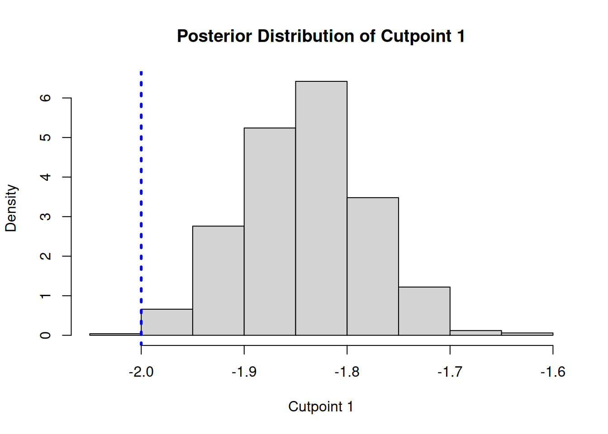
gamma2 <- cutpoint_samples[2, ] + colMeans(y_hat_train_post)
hist(
gamma2,
main = "Posterior Distribution of Cutpoint 2",
xlab = "Cutpoint 2",
freq = FALSE
)
abline(v = gamma_true[2], col = 'blue', lty = 3, lwd = 3)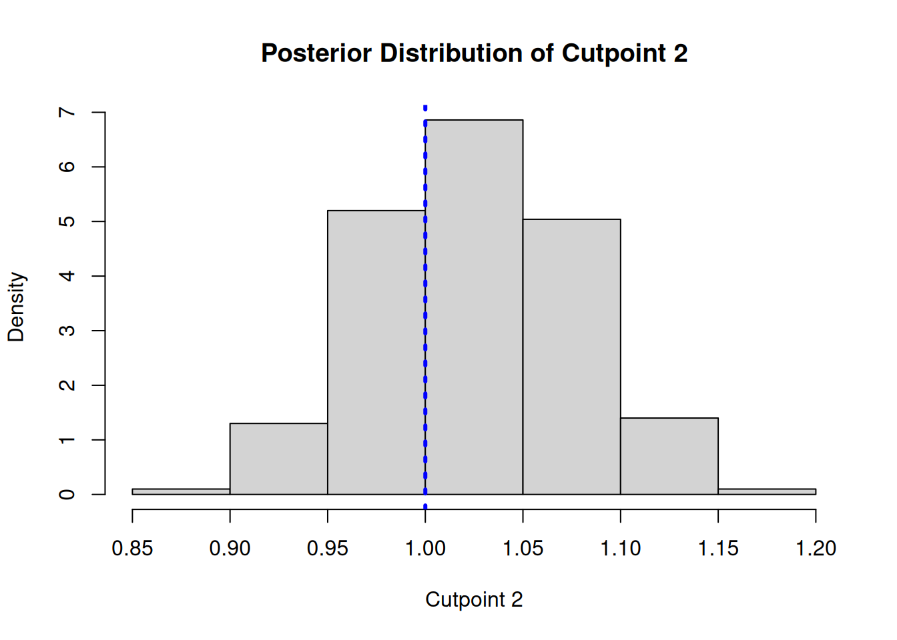
# cutpoint_samples shape: (n_categories - 1, num_samples)
# shifted by per-sample mean of train predictions to remove non-identifiable intercept
cutpoint_samples = bart_model.extract_parameter("cloglog_cutpoints")
y_hat_train_post = bart_model.predict(X=X_train, scale="linear", terms="y_hat", type="posterior")
gamma1 = cutpoint_samples[0, :] + y_hat_train_post.mean(axis=0)
gamma2 = cutpoint_samples[1, :] + y_hat_train_post.mean(axis=0)
fig, (ax1, ax2) = plt.subplots(1, 2, figsize=(12, 4))
ax1.hist(gamma1, density=True, bins=40)
ax1.axvline(gamma_true[0], color="blue", linestyle="dotted", linewidth=2)
ax1.set_title("Posterior Distribution of Cutpoint 1")
ax1.set_xlabel("Cutpoint 1")
ax2.hist(gamma2, density=True, bins=40)
ax2.axvline(gamma_true[1], color="blue", linestyle="dotted", linewidth=2)
ax2.set_title("Posterior Distribution of Cutpoint 2")
ax2.set_xlabel("Cutpoint 2")
plt.tight_layout()
plt.show()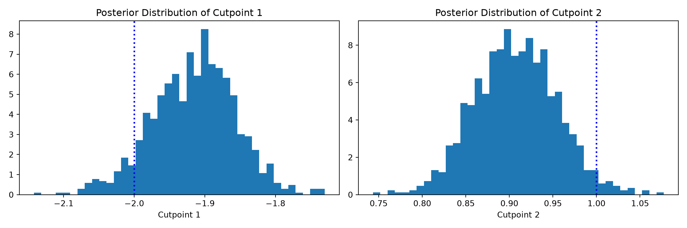
We can compare the true value of the latent “utility function” \(\lambda(x)\) to the (mean-shifted) BART forest predictions.
# Train set predicted versus actual
y_hat_train <- predict(
bart_model,
X = X_train,
scale = "linear",
terms = "y_hat",
type = "mean"
)
lambda_pred_train <- y_hat_train - mean(y_hat_train)
plot(
lambda_pred_train,
true_lambda_function[train_idx],
main = "Train Set: Predicted vs Actual",
xlab = "Predicted",
ylab = "Actual"
)
abline(a = 0, b = 1, col = 'blue', lwd = 2)
cor_train <- cor(true_lambda_function[train_idx], lambda_pred_train)
text(
min(lambda_pred_train),
max(true_lambda_function[train_idx]),
paste('Correlation:', round(cor_train, 3)),
adj = 0,
col = 'red'
)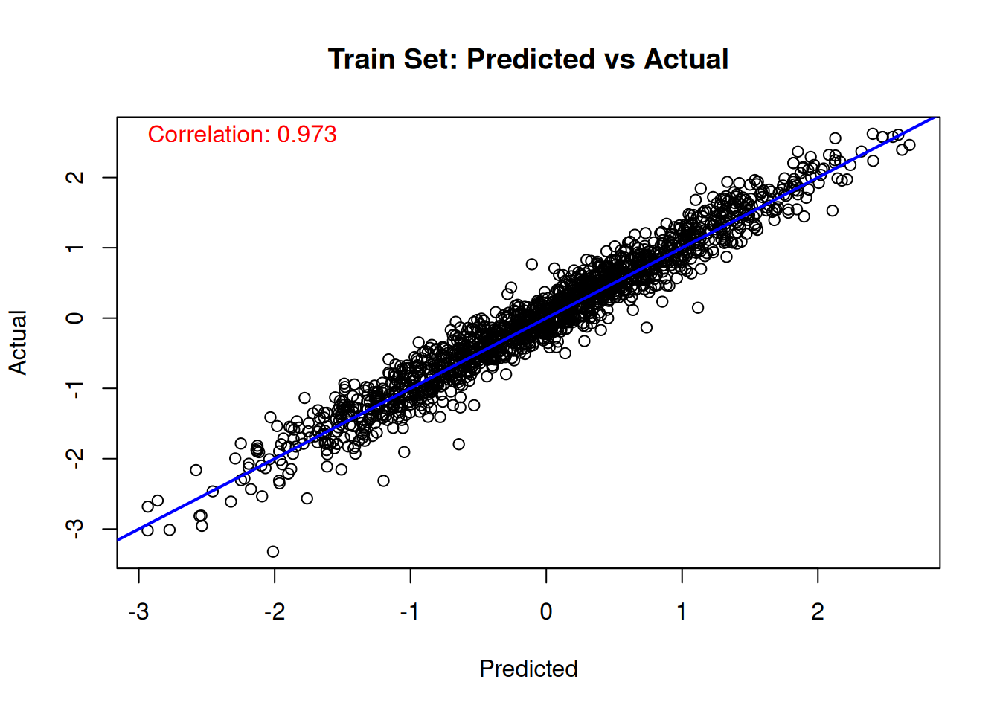
# Test set predicted versus actual
y_hat_test <- predict(
bart_model,
X = X_test,
scale = "linear",
terms = "y_hat",
type = "mean"
)
lambda_pred_test <- y_hat_test - mean(y_hat_test)
plot(
lambda_pred_test,
true_lambda_function[test_idx],
main = "Test Set: Predicted vs Actual",
xlab = "Predicted",
ylab = "Actual"
)
abline(a = 0, b = 1, col = 'blue', lwd = 2)
cor_test <- cor(true_lambda_function[test_idx], lambda_pred_test)
text(
min(lambda_pred_test),
max(true_lambda_function[test_idx]),
paste('Correlation:', round(cor_test, 3)),
adj = 0,
col = 'red'
)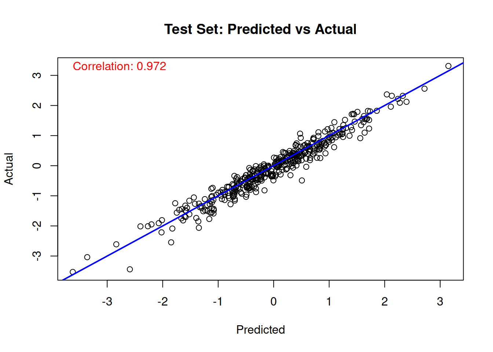
y_hat_train = bart_model.predict(X=X_train, scale="linear", terms="y_hat", type="mean")
y_hat_test = bart_model.predict(X=X_test, scale="linear", terms="y_hat", type="mean")
lambda_pred_train = y_hat_train - y_hat_train.mean()
lambda_pred_test = y_hat_test - y_hat_test.mean()
corr_train = np.corrcoef(true_lambda[train_inds], lambda_pred_train)[0, 1]
corr_test = np.corrcoef(true_lambda[test_inds], lambda_pred_test)[0, 1]
fig, (ax1, ax2) = plt.subplots(1, 2, figsize=(12, 5))
ax1.scatter(lambda_pred_train, true_lambda[train_inds], alpha=0.3, s=10)
ax1.axline((0, 0), slope=1, color="blue", linewidth=2)
ax1.set_title("Train Set: Predicted vs Actual")
ax1.set_xlabel("Predicted")
ax1.set_ylabel("Actual")
ax1.text(0.05, 0.95, f"Correlation: {corr_train:.3f}", transform=ax1.transAxes,
color="red", verticalalignment="top")
ax2.scatter(lambda_pred_test, true_lambda[test_inds], alpha=0.3, s=10)
ax2.axline((0, 0), slope=1, color="blue", linewidth=2)
ax2.set_title("Test Set: Predicted vs Actual")
ax2.set_xlabel("Predicted")
ax2.set_ylabel("Actual")
ax2.text(0.05, 0.95, f"Correlation: {corr_test:.3f}", transform=ax2.transAxes,
color="red", verticalalignment="top")
plt.tight_layout()
plt.show()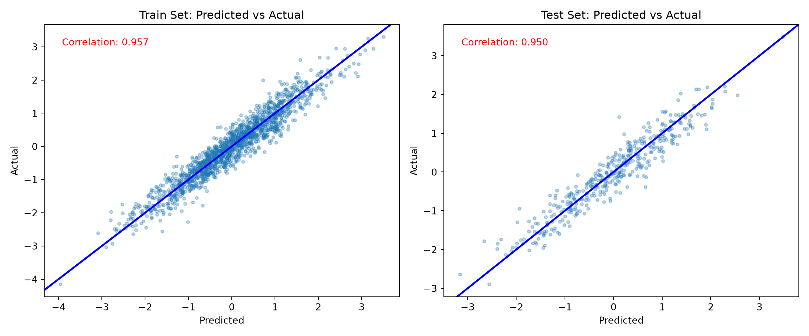
Finally, we compare the estimated class probabilities with their true simulated values for each class on the training set.
for (j in 1:n_categories) {
mean_probs <- rowMeans(est_probs_train[, j, ])
plot(
true_probs[train_idx, j],
mean_probs,
main = paste("Training Set: True vs Estimated Probability, Class", j),
xlab = "True Class Probability",
ylab = "Estimated Class Probability"
)
abline(a = 0, b = 1, col = 'blue', lwd = 2)
cor_train_prob <- cor(true_probs[train_idx, j], mean_probs)
text(
min(true_probs[train_idx, j]),
max(mean_probs),
paste('Correlation:', round(cor_train_prob, 3)),
adj = 0,
col = 'red'
)
}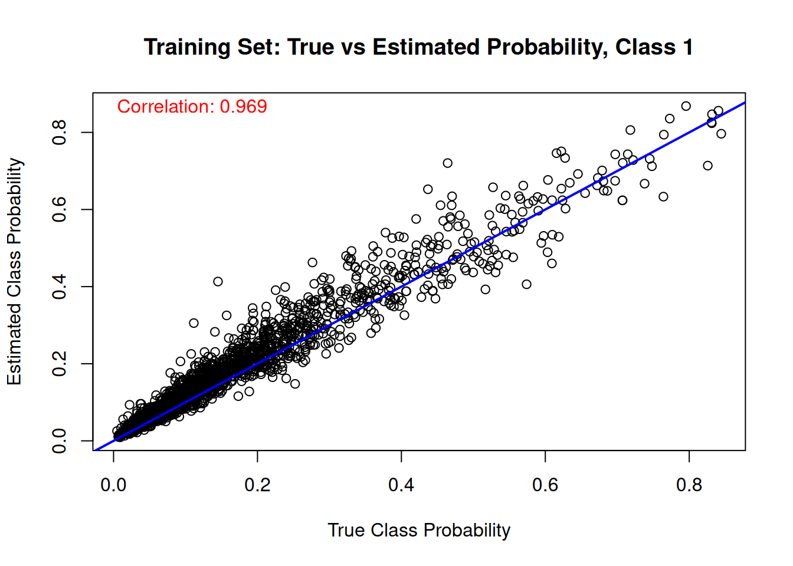
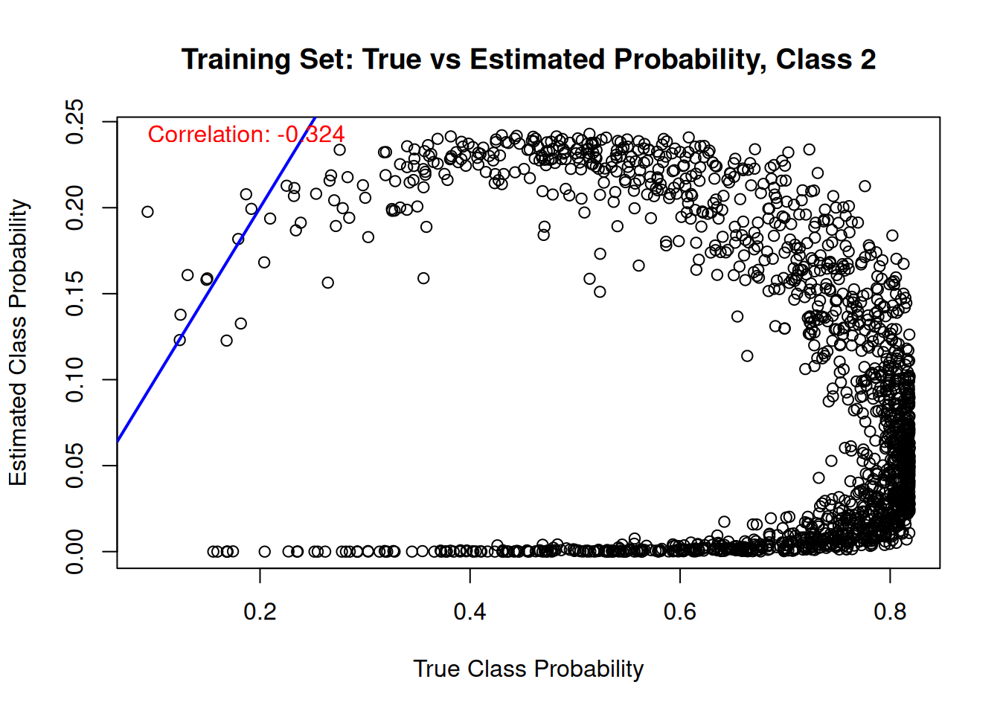
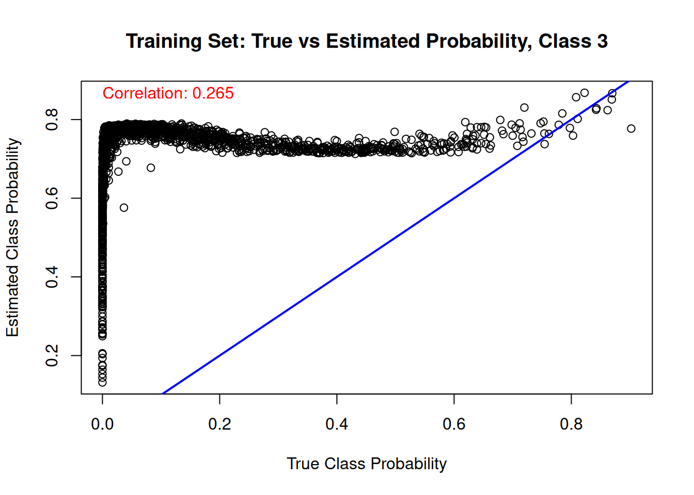
fig, axes = plt.subplots(1, n_categories, figsize=(15, 5))
for j in range(n_categories):
corr = np.corrcoef(true_probs[train_inds, j], est_probs_train[:, j])[0, 1]
axes[j].scatter(true_probs[train_inds, j], est_probs_train[:, j], alpha=0.3, s=10)
axes[j].axline((0, 0), slope=1, color="blue", linewidth=2)
axes[j].set_title(f"Training Set: True vs Estimated Probability, Class {j + 1}")
axes[j].set_xlabel("True Class Probability")
axes[j].set_ylabel("Estimated Class Probability")
axes[j].text(0.05, 0.95, f"Correlation: {corr:.3f}", transform=axes[j].transAxes,
color="red", verticalalignment="top")
plt.tight_layout()
plt.show()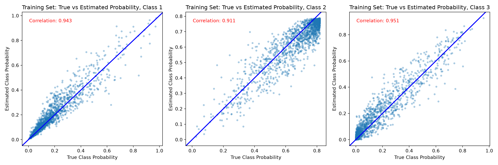
And the same comparison on the test set.
for (j in 1:n_categories) {
mean_probs <- rowMeans(est_probs_test[, j, ])
plot(
true_probs[test_idx, j],
mean_probs,
main = paste("Test Set: True vs Estimated Probability, Class", j),
xlab = "True Class Probability",
ylab = "Estimated Class Probability"
)
abline(a = 0, b = 1, col = 'blue', lwd = 2)
cor_test_prob <- cor(true_probs[test_idx, j], mean_probs)
text(
min(true_probs[test_idx, j]),
max(mean_probs),
paste('Correlation:', round(cor_test_prob, 3)),
adj = 0,
col = 'red'
)
}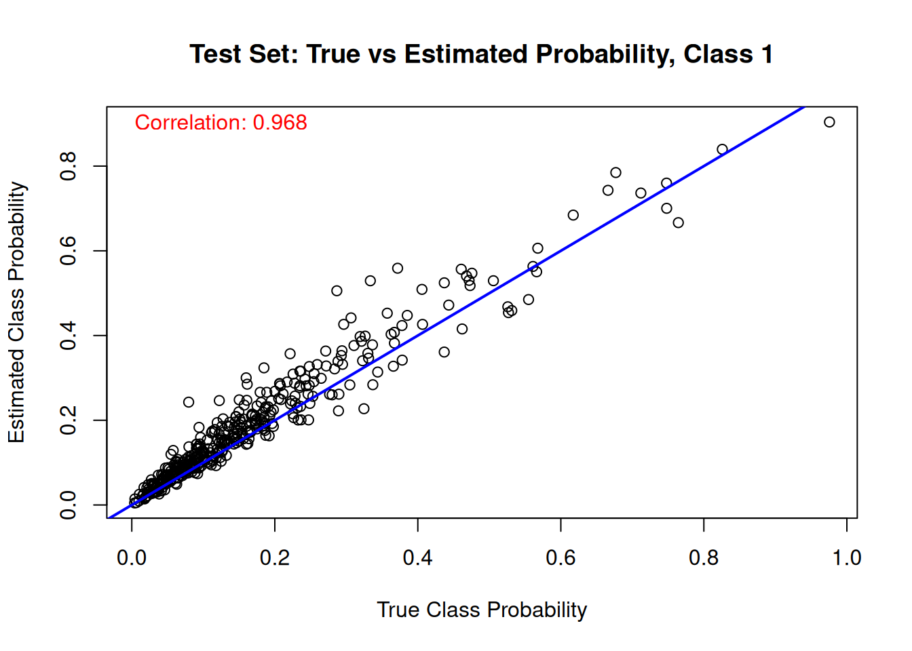
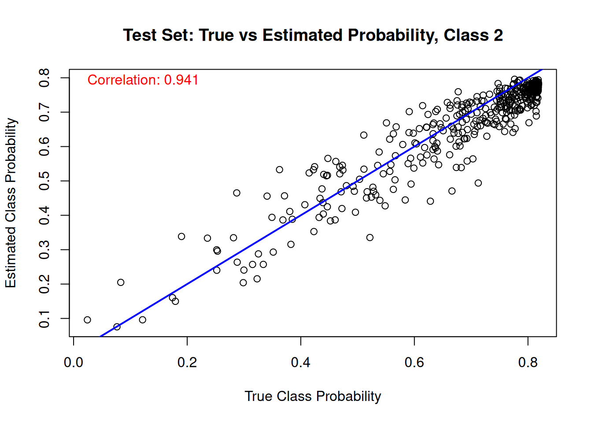
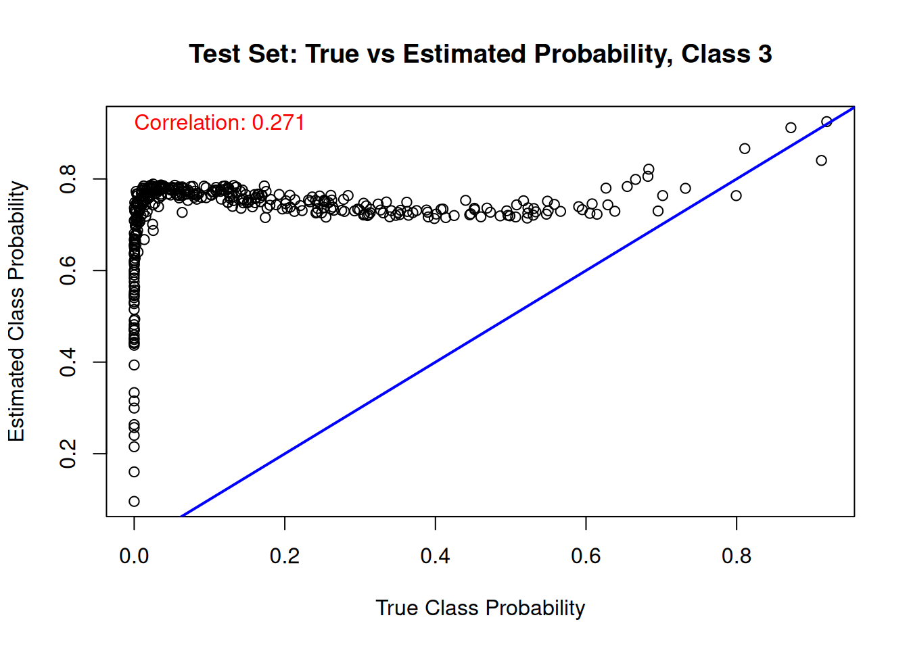
fig, axes = plt.subplots(1, n_categories, figsize=(15, 5))
for j in range(n_categories):
corr = np.corrcoef(true_probs[test_inds, j], est_probs_test[:, j])[0, 1]
axes[j].scatter(true_probs[test_inds, j], est_probs_test[:, j], alpha=0.3, s=10)
axes[j].axline((0, 0), slope=1, color="blue", linewidth=2)
axes[j].set_title(f"Test Set: True vs Estimated Probability, Class {j + 1}")
axes[j].set_xlabel("True Class Probability")
axes[j].set_ylabel("Estimated Class Probability")
axes[j].text(0.05, 0.95, f"Correlation: {corr:.3f}", transform=axes[j].transAxes,
color="red", verticalalignment="top")
plt.tight_layout()
plt.show()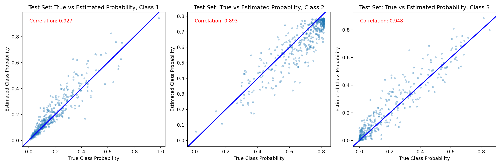
References
Alam, Entejar, and Antonio R Linero. 2025. “A Unified Bayesian Nonparametric Framework for Ordinal, Survival, and Density Regression Using the Complementary Log-Log Link.” arXiv Preprint arXiv:2502.00606.